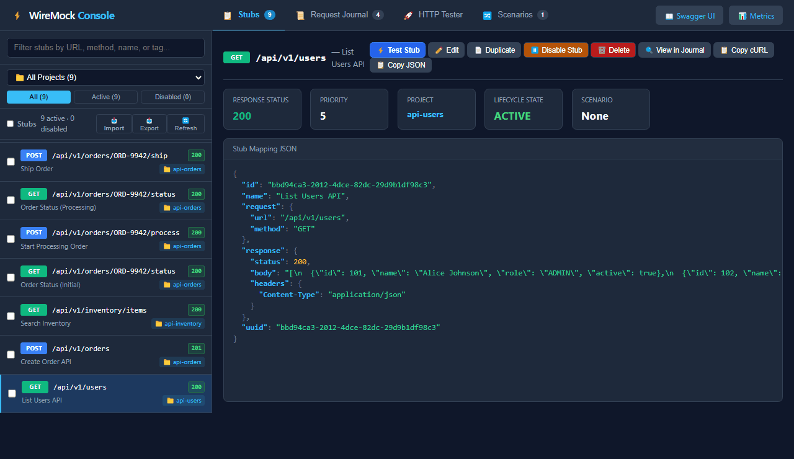

Upgrade WireMock with an embedded web console, automatic OpenAPI mock generation, deterministic correlation-isolated stateful workflows, and in-process L4 network chaos.

Parallel test runs colliding, manual OpenAPI mapping, and SaaS compliance roadblocks.
Standard WireMock scenarios share global state. When concurrent CI workers mutate the same scenario, parallel tests overwrite each other and cause non-deterministic flakes.
Developers are forced to juggle Postman, inspect raw JSON mappings, or grep through multiline logs just to see why an incoming request returned a 404 unmatched error.
Commercial SaaS mocking platforms require sending proprietary schemas and payloads to third-party clouds—strictly forbidden in banking, healthcare, and defense.
Available as individual lightweight library extensions or a 1-line All-in-One meta bundle.
Pure Vanilla ES6 Single-Page App at /__admin/ui/. Real-time fuzzy stub search, scenario DAG visualizer, request journal, and ad-hoc HTTP tester. Zero NPM.
Import OpenAPI 3.0 / 3.1 specifications into synthetic stubs. Pass traffic through to live upstream staging services, record snapshots, and sever connections to run 100% offline.
Model complex business rules (e.g. "Cannot close case while child tasks are pending") in a 100% RCE-safe sealed AST engine with session isolation via X-Correlation-Id.
In-process Layer 4 TCP network impairment engine running on Java 21 Virtual Threads. Compatible with Shopify Toxiproxy REST APIs and declarative stub listeners.
In-process request counters and duration histograms exposed via standard Prometheus scrape route at /__admin/metrics/prometheus. W3C traceparent server spans.
Single-line machine-parseable JSON log format capturing method, URL, status code, latency, and corporate headers (x-correlation-id, x-tenant-id) directly in MDC.
In-process Layer 7 Tuxedo / Casual domain gateway on raw TCP. Stub-driven dynamic proxying, multi-upstream 2PC transaction stickiness, and synthetic XA voting.
casual://host:portWatch a multi-protocol banking application (HTTP REST + Casual 2PC distributed transactions) transition from live proxy recording to 100% offline stub replay—with zero code changes.
System Under Test interacts with live CRM, Case API, and Casual 2PC billing. WireMock records every HTTP and binary XATMI call transparently into the unified request journal.
With one click in the Web UI, captured sessions are harvested into deterministic stubs, and project routes instantly switch from LIVE PROXY to STUBS MODE.
Live backend servers are shut down completely. The identical test suite replays flawlessly with zero upstream dependencies, local 2PC transaction synthesis, and zero flakes.
Run all enterprise simulation capabilities inside a single JVM process or standalone JAR container.
wiremock-extensions deploys an in-process dual-ingress pattern using Java 21 Virtual Threads:
Both ingresses share the same memory space, requiring zero external Toxiproxy containers or root OS netem privileges.
Drop wiremock-extension-bundle-1.7.0.jar onto the classpath alongside wiremock-standalone.
Standard Java ServiceLoader dynamically registers every extension without XML or manual configuration:
// ExtensionFactory auto-registers all endpoints:
http://localhost:8080/__admin/ui/
http://localhost:8080/__admin/openapi/import
http://localhost:8080/__admin/metrics/prometheus
http://localhost:8080/__admin/netem/proxies
http://localhost:8080/__admin/casual/configThe developer experience of commercial platforms with the compliance safety of 100% on-premises open source.
| Capability | WireMock OSS | WireMock Cloud | Mockoon | Microcks | WireMock Extended |
|---|---|---|---|---|---|
| Deployment Model | Self-Hosted | SaaS Cloud | Desktop App | Kubernetes (K8s) | Self-Hosted / Zero-Cloud |
| Embedded Web Console | None | Yes (Cloud) | Yes (Electron) | Yes (Web) | Yes (Pure Vanilla ES6) |
| OpenAPI Ingestion | Manual / Plugin | Yes | Partial | Yes | Yes (Live Proxy + Snap) |
| Stateful Parallel Isolation | No (Global Collision) | Manual Scenarios | No | Partial | Yes (X-Correlation-Id AST) |
| In-Process L4 Network Chaos | Delay Only | Latency Only | Delay Only | No | Yes (Toxiproxy / Java 21) |
| JVM / JUnit Embedding | Native | Hybrid Runner | CLI Only | Testcontainers | Native JVM 21 & CLI |
| Licensing & Cost | Free Apache 2.0 | Paid / Commercial SaaS | Free MIT | Free Apache 2.0 | 100% Free Apache 2.0 |
Drop onto your classpath or standalone runner. Automatic Java SPI auto-discovery handles the rest.
Drop the bundle JAR alongside your standard WireMock Standalone JAR:
java -cp "wiremock-extension-bundle-1.7.0.jar:wiremock-standalone-3.12.1.jar" \
com.github.tomakehurst.wiremock.standalone.WireMockServerRunner \
--port 8080 --verbose
✓ Instantly open http://localhost:8080/__admin/ui/ in your browser!
Add the extension bundle as a test dependency:
// Gradle build.gradle
testImplementation 'io.github.mattiasgreen:wiremock-extension-bundle:1.7.0'
// In your tests, standard WireMock auto-discovers all extensions:
@WireMockTest(httpPort = 8080)
class OrderServiceTest {
// All endpoints, metrics, and state engines active!
}